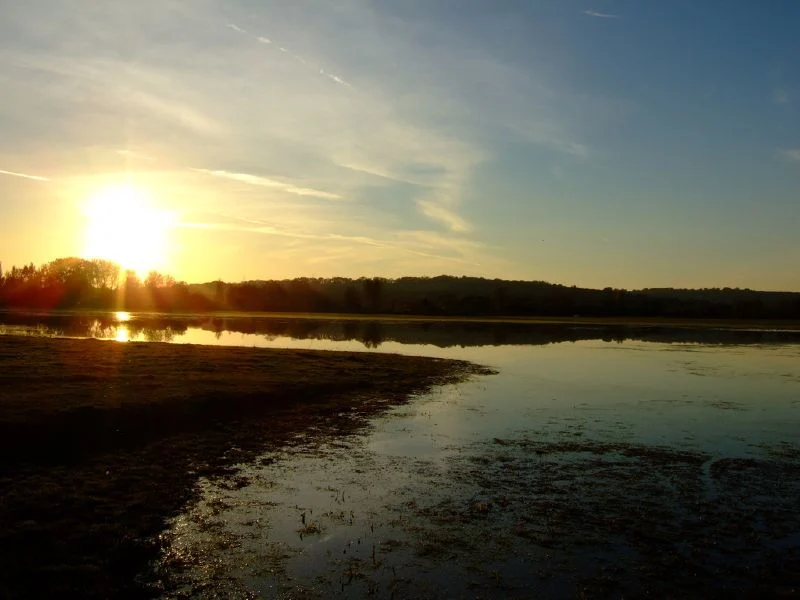

Living Things Explorer
Spot what’s alive, find where animals live, and follow a frog or butterfly as it grows.
Start exploring

🔍 Game 1: Living or Nonliving?
How to play: Look at the card. Is it living or nonliving?
What Makes Something Alive?
Every living thing shares a few big jobs it has to do. If something can't do these jobs on its own, it is nonliving — even if it moves, like a car, or came from something living, like a wooden chair.
Breathes
Takes in air or water to get what it needs inside its body.
Eats
Takes in food or makes its own food to get energy.
Grows
Gets bigger and changes shape as it gets older.
Responds
Reacts to the world — a plant leans toward light, you jump at a loud sound.
Reproduces
Can make more living things of the same kind.
Living Things Need These to Survive
Every living thing — plant, animal, or person — needs these four things to stay alive and grow:
Water
To drink, or for plants to soak up through their roots.
Air
Animals breathe it in; plants use part of it to make food.
Food
Animals eat it; plants make their own using sunlight.
Space & Shelter
A safe place to live, grow, and raise young.
🌍 Game 2: Match Each Animal to Its Habitat
How to play: A habitat is the natural home of an animal. Choose the habitat that best fits the animal on the card.
🐣 Game 3: Put the Life Cycle in Order
How to play: Living things are born (or hatch), grow, change, and can have young of their own — that whole story is a life cycle. Pick which animal to sequence below, then tap the stages in the order they happen, starting with what comes first.
📸 Look Closer: Real Living and Nonliving Things
Click any photo to see it up close.


%201.jpg?width=480)
,%20Bicycle%20--%202013%20--%204368.jpg?width=480)


Words to Know
Living
Something that breathes, eats, grows, responds, and can make more of its kind.
Nonliving
Something that does not breathe, eat, grow on its own, or reproduce.
Needs
The things a living thing must have to survive: water, air, food, and space.
Habitat
The natural home of a plant or animal, like an ocean, forest, desert, or arctic.
Life Cycle
The stages a living thing passes through as it is born (or hatches), grows, and changes.
Offspring
The young that a living thing produces — puppies, chicks, and seedlings are all offspring.
Quick Check
Read each question aloud together, then pick the best answer.
Wonder and Reflection: So Many Kinds of Life
Look outside, and you'll see it: ants marching, birds singing, grass growing, dogs napping in the sun. Every single one of these living things is different, and every single one needs the same basic things to stay alive — water, air, food, and a safe place to live.
The Bible tells us that God made "every living thing" on purpose, "according to their kinds," and called it good. When you sort a butterfly from a bicycle, or trace a frog's life from egg to grown frog, you are noticing the same careful design that Scripture points to — a world full of living things, each cared for and each able to grow, change, and have young of their own.
"You send forth your Spirit, and they are created, and you renew the face of the ground."
— Psalm 104:30
"So God created the great creatures of the sea and every living thing with which the water teems and that moves about in it, according to their kinds, and every winged bird according to its kind. And God saw that it was good."
— Genesis 1:21
Summary: What We Learned
- Living things breathe, eat, grow, respond, and reproduce. Nonliving things can't do all of these on their own.
- Every living thing needs water, air, food, and space to survive.
- A habitat is an animal's natural home — like an ocean, forest, desert, or the arctic.
- A life cycle is the story of how a living thing is born (or hatches), grows, and changes.
- The living world is full of variety — and every kind of living thing has what it needs to grow and thrive.